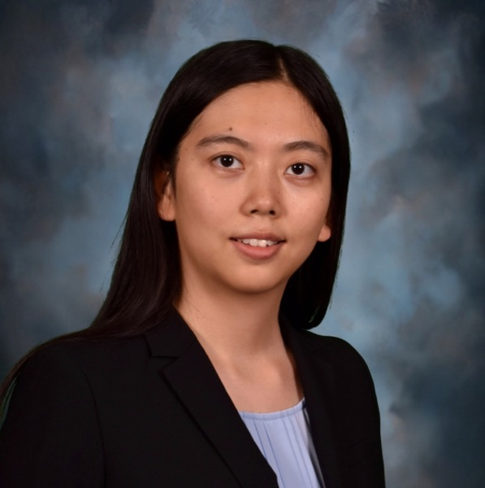

Large Language Models (LLMs) such as ChatGPT have demonstrated strong capabilities in understanding, generating, and reasoning over natural language. In bioinformatics and biomedical informatics, these models are rapidly emerging as a new computational paradigm with the potential to transform literature mining, data integration, workflow automation, and biomedical reasoning. This tutorial provides a practical, introductory, and hands-on guide to understanding and applying LLMs and agentic AI systems in biomedical data science research. The tutorial begins with a concise introduction to LLMs and their evolution, followed by an overview of both commercial and open-source models commonly used in scientific applications. Participants will learn core techniques including prompt design, retrieval-augmented generation for biomedical literature and databases, text-to-SQL query generation, and bioinformatics code generation in Python. Building on these foundations, the tutorial introduces agentic AI systems that enable multi-step reasoning, tool use, and workflow orchestration for complex bioinformatics and biomedical informatics tasks. Through guided hands-on exercises and real-world case studies, participants will gain practical experience applying LLMs and agentic AI to realistic biomedical research scenarios. The tutorial also emphasizes responsible and rigorous use of these models, addressing limitations such as hallucination, bias, robustness, and reproducibility in scientific and clinical contexts. By the end of the tutorial, attendees will be equipped with foundational knowledge, practical skills, and best practices to responsibly integrate LLMs and agentic AI into biomedical research workflows.
Learning Objectives
By the end of the tutorial, participants will be able to:
|
 |
|||
|
Robert Tang
Yale University |
Mark Gerstein
Yale University |
Xuan Wang
Virginia Tech |
Wenqi Shi
UT Southwestern Medical Center |
July 12, 2026 · Room: Georgetown
| Time | Section | Presenter |
|---|---|---|
| 14:00 - 14:05 | Welcome and Overview | Robert Tang |
| 14:05 - 14:15 | Some Background on LLMs and Agents | Robert Tang |
| 14:15 - 14:30 | Coding LLMs for Biomedical | Robert Tang |
| 14:30 - 14:50 | Coding LLMs in Practice | Robert Tang and Yuxuan Liao |
| 14:50 - 14:55 | Break and QA | |
| 15:00 - 16:00 | LLMs & Agentic AI for Biomedical Informatics: Case Studies for Brain Genomics and Comparisons with Past Approaches | Mark Gerstein (Virtual) |
| 16:00 - 16:30 | LLM and Agentic AI for Bioinformatics | Xuan Wang |
| 16:30 - 17:00 | BioArc Practice Tutorial | Xuan Wang and Yi Fang |
| 17:00 - 17:30 | Scaling Agentic Intelligence in Computational Biomedical Research | Wenqi Shi |
| 17:30 - 18:00 | Computational Biomedical Research | Wenqi Shi and students |